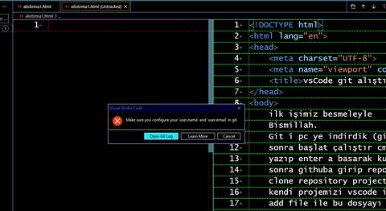

önceki alıştırmada bodoslamadan git kurduk. sonra vscode açtık tabi
daha önce git hubda facebook ta instagramda hesap açar gibi kolayca
kullanıcı adı ve mail ile hesap açtık. maili mizi doğruladık
github bizi bir depo oluşrurmaya yönlendirdi. boş ta olsa bir isim vererek
repostory dediği bi depo oluşturduk. adresi kopyaladık. geldik buraya
vscode ye get clone diyerek oradan proje dediğimiz repostory içerisindeki
boş alıştırma projesini buraya klonlarken şu resimdeki hata ile karşılaştık
ve şu videodaki çözümleri yaptık. bundan daha basit bir anlatım ve görsellik olamaz.
3. alıştırmada artık gerçek bir web sitesine vscode den içerik atıcaz.
inşaAllah.
Visual Studio Code Make sure Configure Hatası

Visual Studio Code Git Hub bağlantı hatası çözümü Video